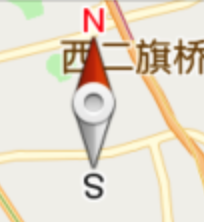
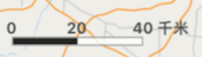

UI设置
1. 指南针
可以指示地图的南北方向，默认的视图状态下不显示，此控件显示在左上角，设置方式及效果图如下所示：
// 是否显示指南针，默认为NO
self.mapView.showsCompass = YES;

2. 比例尺
默认显示在左下角，也可以通过参数进行设置，设置方式和效果图如下所示：
// 是否显示比例尺，默认为YES
self.mapView.showsScale = YES;
// 设置地图比例尺偏移offset比例尺的偏移量, 如果offset为CGPointZero则为默认位置
- (void)setScaleViewOffset:(CGPoint)offset;

3. 地图Logo
腾讯地图Logo默认显示在右下角，改变Logo位置的示例代码如下：
//设置地图Logo位置和大小. 调用后会覆盖默认位置
[self.mapView setLogoMargin:(CGPoint)margin anchor:(QMapLogoAnchor)anchor];
anchor：Logo基于mapview的位置的基准锚点:
QMapLogoAnchorRightBottom ///< 右下对齐, logo的对齐位置, 默认锚点位置
QMapLogoAnchorLeftBottom, ///< 左下对齐
QMapLogoAnchorLeftTop, ///< 左上对齐
QMapLogoAnchorRightTop, ///< 右上对齐
QMapLogoAnchorMax ///< 边界, 自身无实际意义
(注意：使用腾讯地图SDK要求显示logo，如上图所示)
改变地图Logo的大小，示例代码如下：
// scale：Logo大小，基于原始大小的比例值，默认为1.0，有效区间[0.7, 1.3]
- (void)setLogoScale:(CGFloat)scale;